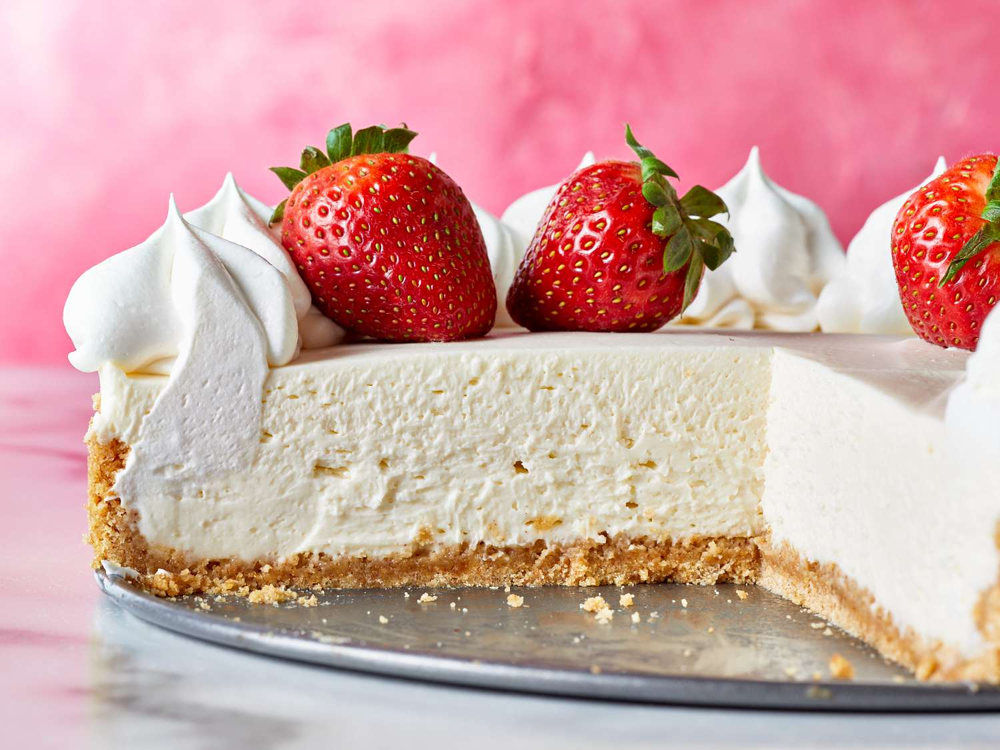

Cheesecake Recipe

This cheesecake recipe is a classic dessert that is creamy and delicious. Perfect for any occasion!
Ingredients
- 1 1/2 cups graham cracker crumbs
- 1/2 cup sugar
- 1/2 cup butter, melted
- 4 (8 ounce) packages cream cheese
- 1 cup sugar
- 4 eggs
- 1 teaspoon vanilla extract
Steps:
- Preheat oven to 325°F (165°C).
- In a bowl, mix graham cracker crumbs, sugar, and melted butter. Press into the bottom of a 9-inch springform pan.
- In a large bowl, beat cream cheese and sugar until smooth. Add eggs one at a time, mixing well after each addition. Stir in vanilla.
- Pour cream cheese mixture over crust in the springform pan.
- Bake for 55-60 minutes or until set. Let cool before refrigerating for at least 4 hours.